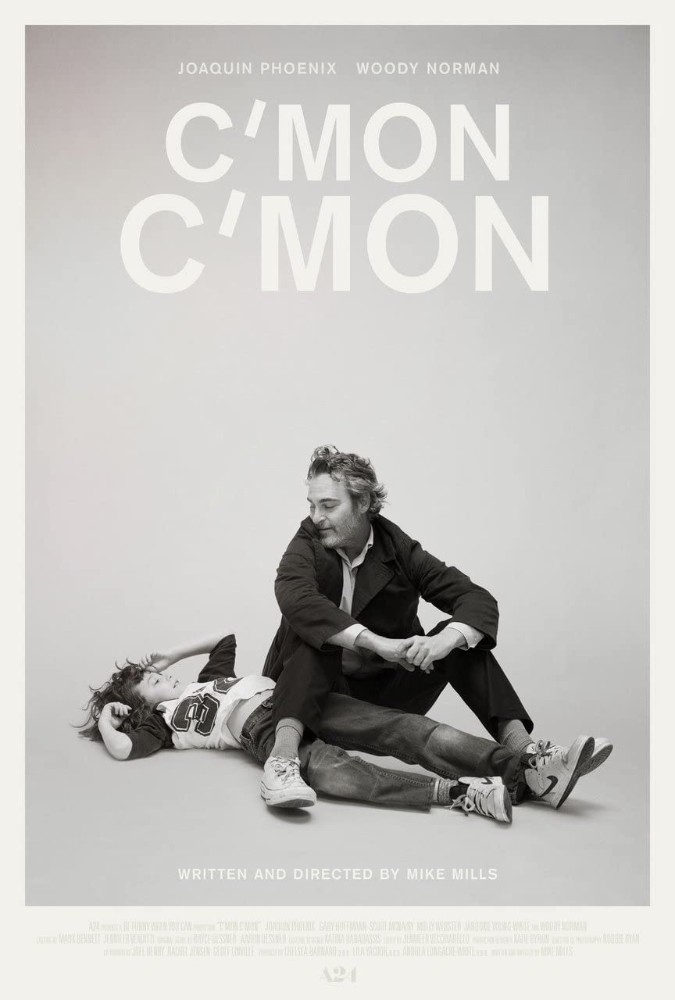
Johnny jest pogubionym w życiu dziennikarzem radiowym. W ramach swojej pracy jeździ po amerykańskich miastach i rozmawia z młodymi ludźmi o ich troskach i oczekiwaniach wobec życia i kraju,
znajdując w ich słowach i ambicjach nadzieję na lepszą przyszłość dla kolejnych pokoleń. Pewnego dnia na prośbę siostry zaczyna opiekować się jej dziewięcioletnim synkiem Jessem podczas jej wyjazdu,
do pogubionego życiowo byłego męża, którego nadal kocha. Po początkowych trudnościach z wyrażaniem własnych emocji mężczyzna i chłopak znajdują wspólny język. Gdy jednak nieobecność kobiety z różnych względów się przedłuża,
Johnny musi wpisać chłopaka w swoje życie zawodowe – zabiera go w trasę, przedstawia swoim znajomym i pozwala mu pomagać sobie w przygotowaniach do kolejnych radiowych wywiadów. W efekcie Johnny uczy się od Jessego co najmniej tyle,
ile rezolutny i lekko ekscentryczny chłopak uczy się od niego, a wyniesione z tej przepięknej partnerskiej relacji lekcje zmienią ich przyszłe życie.
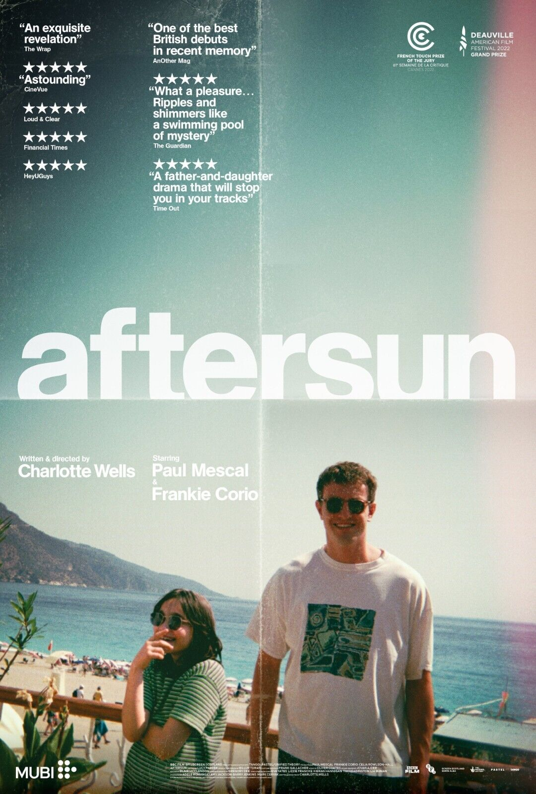
Sophie rozmyśla o chwilach wspólnej radości i osobistej nostalgii po wakacjach spędzonych z tatą dwadzieścia lat wcześniej. Czas spędzony z ojcem Calumem w tureckim kurorcie jest wciąż żywy w jej pamięci.
Wspomnienia prawdziwe i wyimaginowane, wypełniają luki między nagraniami z jej miniDV, gdy próbuje porównać obraz ojca, jaki zapamiętała z tym, którego nigdy tak naprawdę nie poznała.
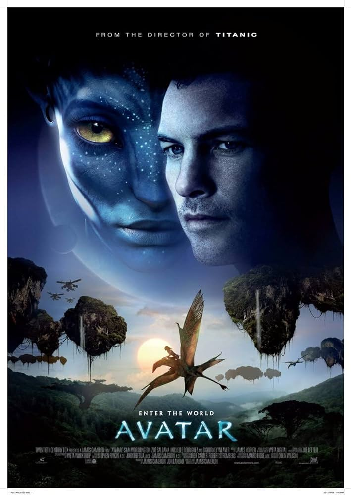
Kompozytor: James Horner
Utwór: The Bioluminescenece of the Night
Utwór: Becoming One of "The People"
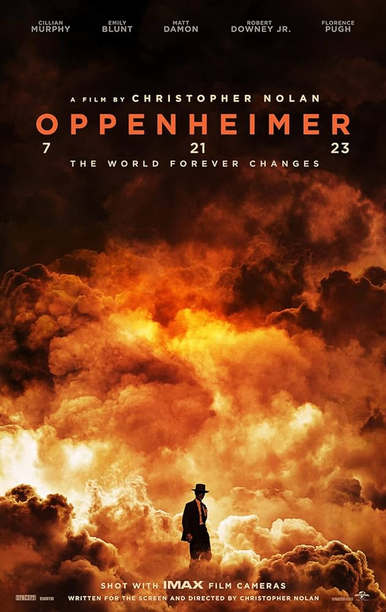
Kompozytor: Ludwig Göransson
Utwór: Can You Hear the Music
Utwór: A Lowly Shoe Salesman
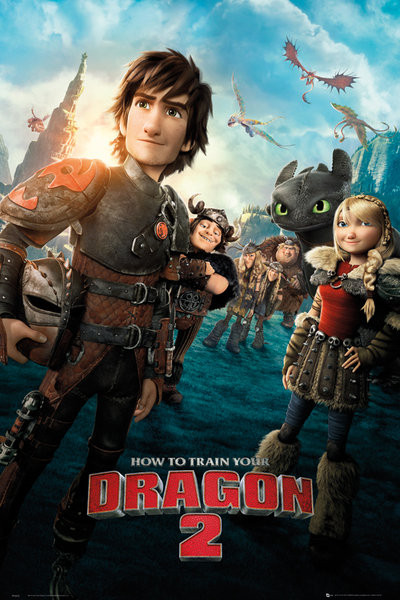
Film opowiada historię chłopca, który złapał smoka, który jest bardzo płochliwy i na dodatek pozbawiony uzębienia. Czy chłopcu uda się zaprzyjaźnić ze zwierzęciem i
pomóc mu pozbyć się uczucia lęku towarzyszącego mu na każdym kroku, czy dzięki temu zostanie wreszcie bohaterem, takim jakim zawsze chciał być?
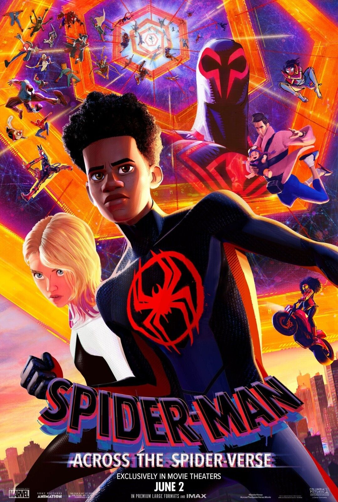
Z Brooklynu Miles trafia do multiwersum. Razem z Gwen Stacy, spotykają innych Spider-Manów, którzy mają za zadanie ochronę świata przed zagrożeniami. Kiedy bohaterowie spierają się o to,
jak poradzić sobie z nowymi niebezpieczeństwami, Miles musi na nowo zdefiniować, co to znaczy być bohaterem i jak ocalić ludzi, których kocha.
Kompozytor: John Powell
Utwór: This is Berk
Utwór: Test Drive
Kompozytor: Daniel Pemberton
Utwór: Across the SpiderVerse - Intro
Utwór: Nueva York Train Chase

Kilka rodzin szlacheckich walczy o panowanie nad ziemiami krainy Westeros. Polityczne i seksualne intrygi są na porządku dziennym. Robert Baratheon, król Siedmiu Królestw,
prosi swojego starego przyjaciela, Eddarda Starka, aby służył jako jego główny doradca. Ten, podejrzewając, że poprzednik na tym stanowisku został zamordowany, przyjmuje propozycję,
aby dogłębnie zbadać sprawę. Okazuje się, że przejęcie tronu planuje kilka rodzin. Lannisterowie, familia królowej, staje się podejrzana o podstępne knucie spisku.
Po drugiej stronie morza pozbawieni władzy ostatni przedstawiciele poprzednio rządzącego rodu, Targaryenów, również zamierzają odzyskać kontrolę nad królestwem. Narastający konflikt pomiędzy rodzinami,
do którego włączają się również inne rody, prowadzi do wojny. W międzyczasie na dalekiej północy budzi się pradawne zło. W chaosie pełnym walk i konfliktów tylko grupa wyrzutków zwana
Nocną Strażą stoi pomiędzy królestwem ludzi, a horrorem kryjącym się poza nim.
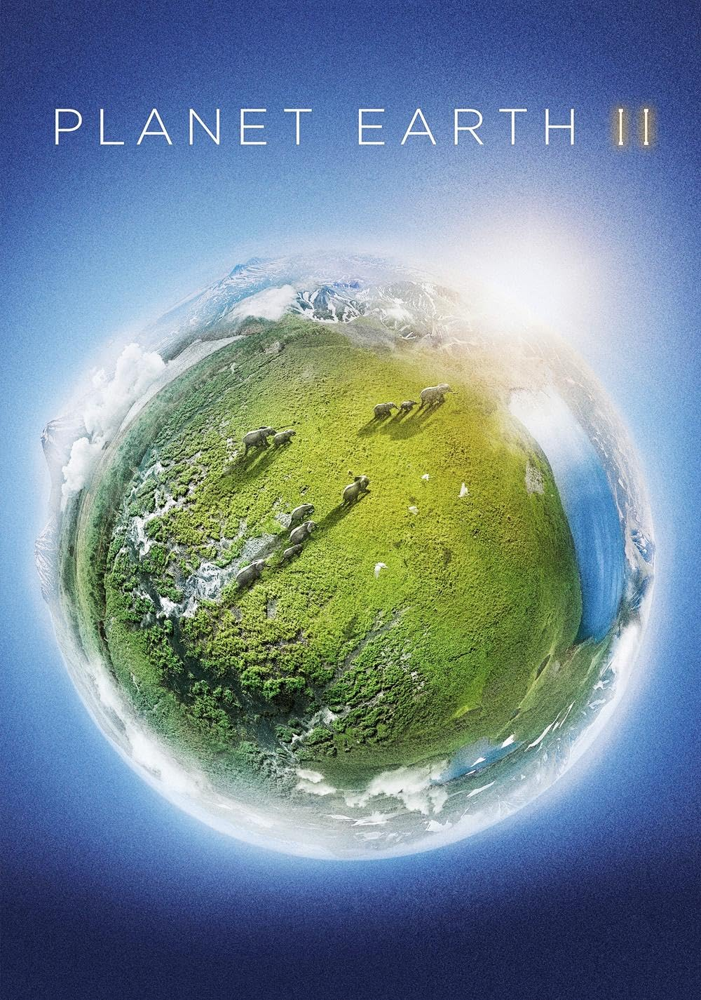
W serialu znajdziemy się w środku najbardziej spektakularnych miejsc bytowania i wydarzeń z życia zwierząt, staniemy oko w oko z niewiarygodnymi stworzeniami, które żyją na naszej planecie.
Postęp technologiczny, jaki nastąpił w ciągu ostatniej dekady jest niewyobrażalny, pozwala nam pokazać świat natury w całkiem nowy sposób. Dziś możemy dotrzeć do naprawdę odległych i trudno dostępnych miejsc,
do minimum zmniejszyć dystans między okiem kamery a zwierzęciem, pozostać niemal niezauważonymi i dzięki temu uchwycić niczym niezniekształcone, naturalne zachowania. Nieosiągalne górskie szczyty,
najbardziej odległe wyspy, srogie pustynie i dżungle, przez które przedarcie się graniczy z cudem – "Planeta Ziemia II" pozwoli Wam odczuć, jak smakuje życie w prawdziwej dziczy.
Kompozytor: Ramin Djawadi
Utwór: Main Title
Utwór: Light of the Seven
Kompozytor: Hans Zimmer, Jasha Klebe
Utwór: Planet Earth II Suite
Utwór: The Sloth
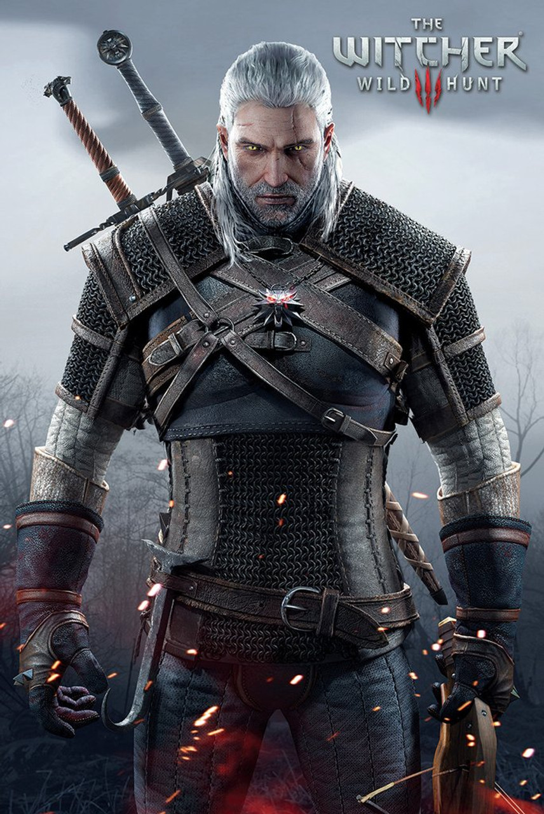
Wiedźmin 3: Dziki Gon przenosi graczy do fantastycznego uniwersum wykreowanego przez Andrzeja Sapkowskiego na potrzeby książkowej serii o wiedźminie.
Głównym bohaterem gry jest znany z wcześniejszych odsłon cyklu Geralt z Rivii, a opowiedziana w niej historia koncentruje się na inwazji cesarstwa Nilfgaardu na Królestwa Północy,
powstrzymaniu tytułowego Dzikiego Gonu, który prześladował Geralta w powieściach oraz zaznaczył swoją obecność w pierwszej i drugiej serii, a także na poszukiwaniach Ciri,
będącej przybraną córką Wiedźmina i Yennefer – jego ukochanej. Warto pamiętać, że fabuła gry jest nieliniowa, a jej przebieg oraz zakończenie determinują decyzje podejmowane przez nas w toku rozgrywki.
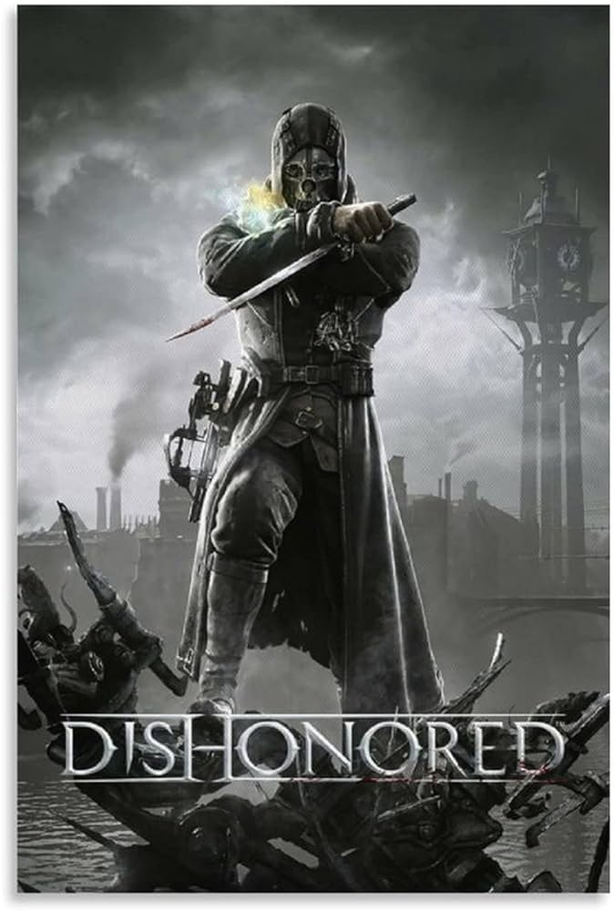
W Dishonored gracz wciela się w postać Corvo Attano, legendarnego Lorda Protektora cesarzowej Jessamine Kaldwin, zamordowanej w zamachu stanu uknutym przez ambitnego Hirama Burrowsa, Lorda Regenta.
Ten, aby odwrócić uwagę od przejęcia przez siebie władzy i uprowadzenia małej Emily, dziedziczki tronu, oskarża o obie zbrodnie głównego bohatera. Choć Corvo jest jednym z najniebezpieczniejszych ludzi
na świecie, doświadczonym wojownikiem i zabójcą, niechybnie zginąłby w więzieniu, gdyby nie niespodziewana interwencja sojuszników, którzy dostarczają mu środków pozwalających wyrwać się na wolność.
Wkrótce potem bohater zostaje naznaczony przez tajemnicze bóstwo o ambiwalentnych zamiarach, znane jako Odmieniec (ang. The Outsider), w wyniku czego zdobywa nadnaturalne zdolności.
Przywdziawszy maskę zabójcy, Corvo wyrusza na krwawą vendettę, by odnaleźć Emily i ukarać tych, którzy zabili jej matkę.
Kompozytor: Marcin Przybyłowicz
Utwór: Geralt of Rivia
Utwór: The Slopes of the Blessure
Kompozytor: Daniel Licht
Utwór: Main Theme
Utwór: Wrenhaven River
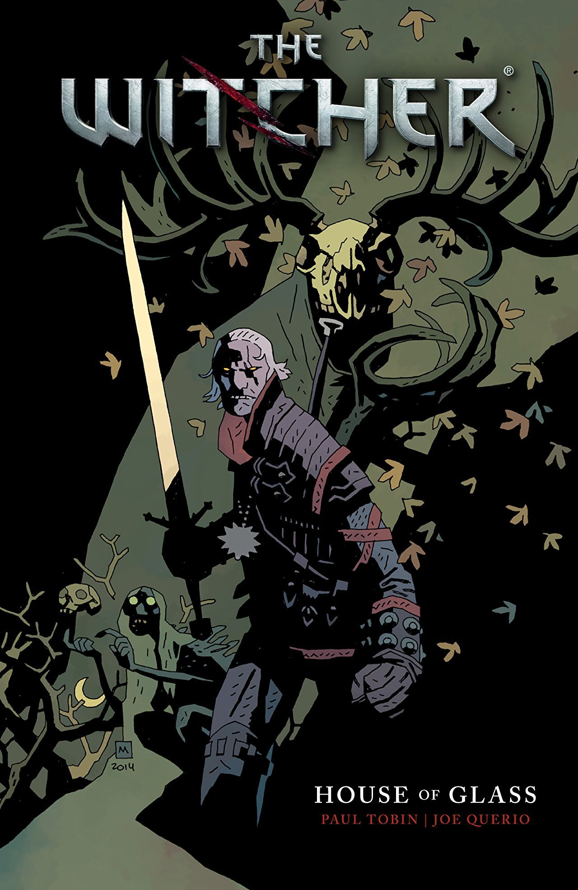
Długo wyczekiwany album komiksowy z Wiedźminem w roli głównej. Autorem scenariusza jest laureat nagrody Eisnera Paul Tobin. Podczas jednej ze swoich podróży, na skraju Czarnego Lasu,
łowca potworów Geralt spotyka mężczyznę, którego żona, rzekomo martwa, lecz wciąż żądna krwi, zamieszkuje posiadłość zwaną Domem ze Szkła. Niekończące się korytarze, gdzie niebezpieczeństwo czai się
za każdym rogiem oraz skrywana przez dom tajemnica sprawią, że Geralt będzie musiał wznieść się na wyżyny swoich wiedźmińskich umiejętności, aby nie tylko rozwiązać związaną z Martą i Jakubem zagadkę,
ale i przeżyć. Komiks rozszerza znane z gier oraz książek uniwersum o nową emocjonującą historię, koncentrującą się na losach legendarnego zabójcy potworów Geralta z Rivii. Wiedźmin. Dom ze Szkła to
idealna pozycja dla miłośników przygody i grozy, niezależnie od tego czy znają wiedźmińskie uniwersum, czy dopiero zamierzają je poznać.
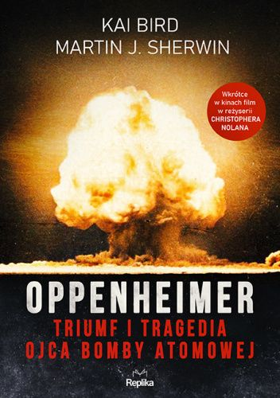
Po zrzuceniu przez Amerykanów bomby atomowej na Hiroszimę, Robert Oppenheimer okrzyknięty został najsłynniejszym naukowcem swego pokolenia. Dla wielu stał się także współczesnym ucieleśnieniem mitu
o Prometeuszu, człowiekiem zmagającym się z konsekwencjami postępu naukowego, do którego przyłożył rękę. Pierwsza połowa XX wieku była złotym okresem fizyki teoretycznej, jednak obserwując w praktyce
konsekwencje własnych odkryć, Oppenheimer stanowczo sprzeciwił się dalszemu rozwojowi broni atomowej, w szczególności bomby wodorowej. Krytykował plany sił powietrznych dotyczące potencjalnego
przeprowadzenia niewyobrażalnie niebezpiecznej dla ludzkości wojny nuklearnej. Książka dogłębnie przedstawia życie i czasy Roberta Oppenheimera, ujawniając wiele zdumiewających i bezprecedensowych
szczegółów, intryg i napięć. To portret genialnego i ambitnego, a zarazem złożonego i pełnego wad człowieka, który na zawsze zmienił świat.
Twórca: Alvaro Soler
Utwór: La Cintura
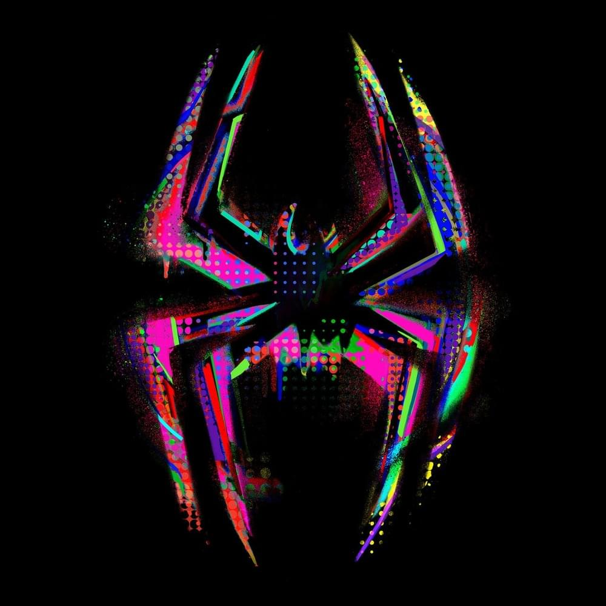
Twórca: Metro Boomin x A$AP Rocky x Roisee
Utwór: Am I Dreaming
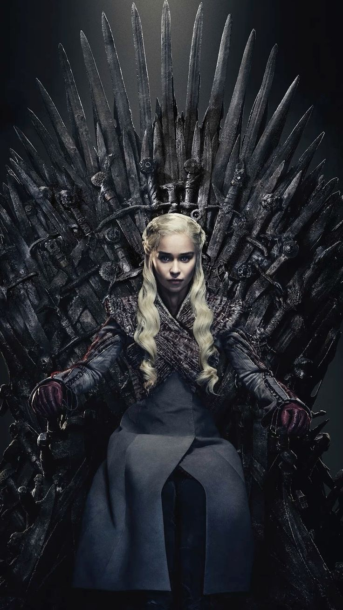
Serial: Gra o tron
Postać: Daenerys Targaryen
Twórcy: David Benioff i D.B. Weiss
Nagrody: Saturn - Najlepsza aktorka w serialu telewizyjnym
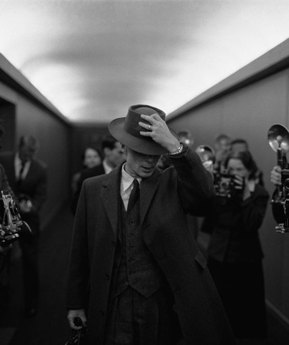
Film: Oppenheimer
Postać: Robert Oppenheimer
Reżyseria: Christopher Nolan
Nagrody: Oscar - Najlepszy aktor pierwszoplanowy
Wiedźmin 3: Dziki Gon przenosi graczy do fantastycznego uniwersum wykreowanego przez Andrzeja Sapkowskiego na potrzeby książkowej serii o wiedźminie.
Głównym bohaterem gry jest znany z wcześniejszych odsłon cyklu Geralt z Rivii, a opowiedziana w niej historia koncentruje się na inwazji cesarstwa Nilfgaardu na Królestwa Północy,
powstrzymaniu tytułowego Dzikiego Gonu, który prześladował Geralta w powieściach oraz zaznaczył swoją obecność w pierwszej i drugiej serii, a także na poszukiwaniach Ciri,
będącej przybraną córką Wiedźmina i Yennefer – jego ukochanej. Warto pamiętać, że fabuła gry jest nieliniowa, a jej przebieg oraz zakończenie determinują decyzje podejmowane przez nas w toku rozgrywki.
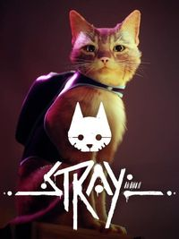
Historia przedstawiona w Stray rozgrywa się w odległej przyszłości, w której człowiek jest tylko wspomnieniem. Nasze miejsce zajęły roboty, zresztą nieróżniące się zachowaniem od ludzi.
Miejscem akcji jest miasto pod betonową kopułą, do którego przypadkiem trafia samotny kot – główny bohater gry. Musi pokonać drogę z samego dołu na szczyt metropolii i wydostać się na powierzchnię,
by wrócić do swojej rodziny. Pomaga mu w tym B12 – tajemniczy dron, który zdaje się wiedzieć o tym świecie więcej niż ktokolwiek inny.